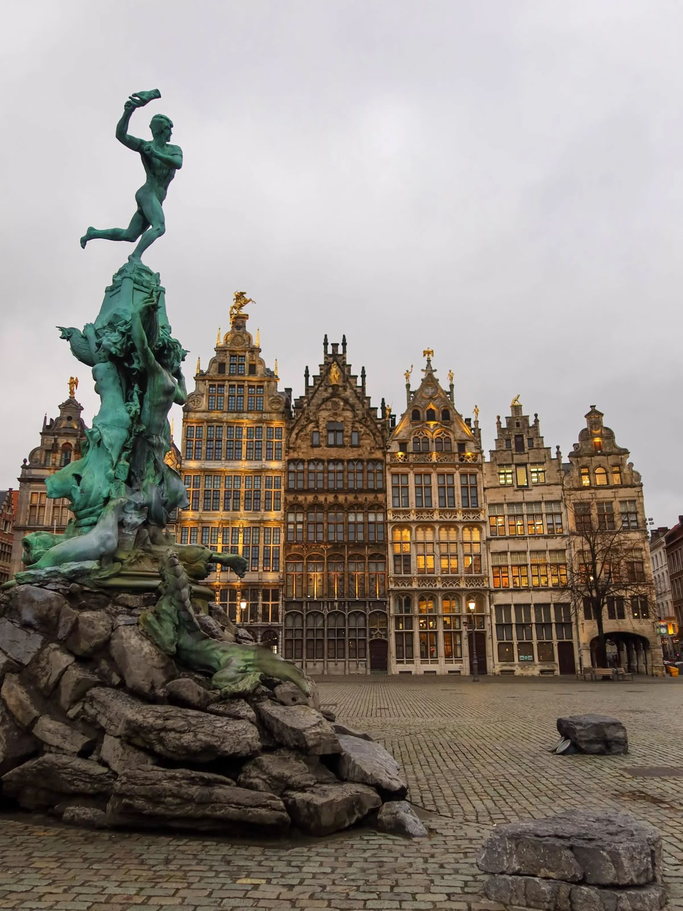
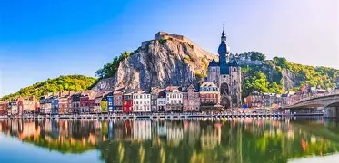
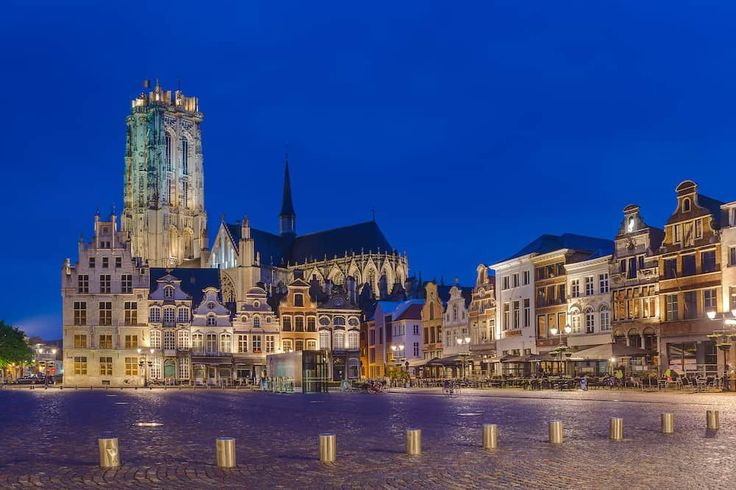
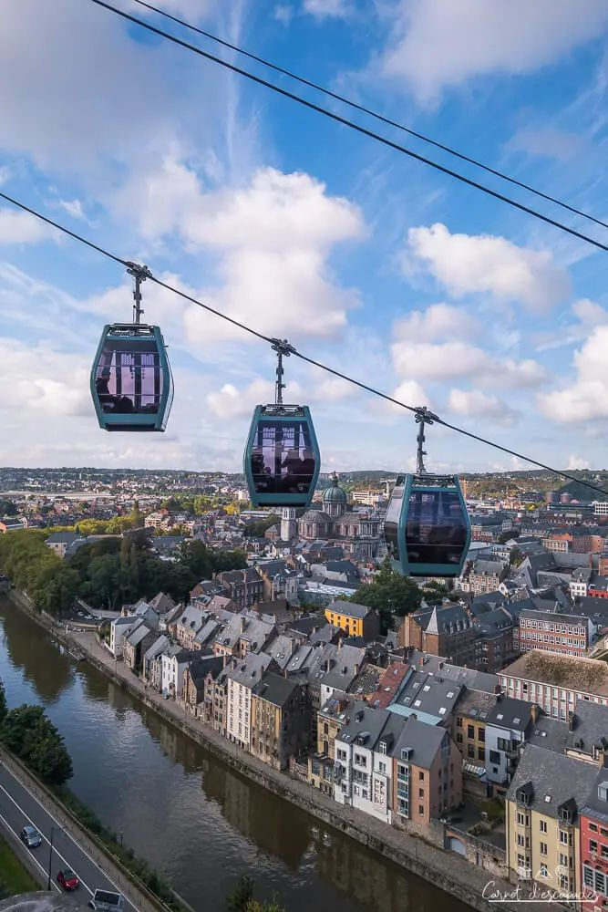

Antwerp
Belgium’s largest city and one of Europe’s most important ports. It is internationally recognized for fashion, diamonds, and art, particularly the legacy of painter Peter Paul Rubens. The city has a strong modern identity alongside its historic core.• See Antwerp Central Station (even if you’re not taking a train)
• Explore the fashion district and small designer shops

• Walk along the Scheldt River at sunset
• Try Belgian beer bars with a more local crowd, away from the cathedral

Dinant
A small town in Wallonia located along the Meuse River, surrounded by cliffs.
It is known for its citadel, scenic setting, and as the birthplace of Adolphe Sax,
the inventor of the saxophone. Dinant offers a slower pace and strong visual appeal.
• Take the cable car up to the citadel for views of the Meuse
• Walk along the river promenade
• Try couque de Dinant (very hard biscuit—more for tradition than taste)
• Combine with a short boat trip on the river if weather’s nice
The ardennes
.webp)
A rural and forested region in southern Belgium. Characterized by rolling hills, rivers, castles, and small villages, it is popular for outdoor activities such as hiking, cycling, and kayaking, as well as for its natural landscapes.• Go hiking or kayaking (especially around Durbuy or La Roche-en-Ardenne)
• Stay overnight in a small village or cabin for the full experience
• Try regional dishes like game meat or stews
• Visit in autumn if you can—colors are amazing
Leuven

• Walk around the Old Market (Oude Markt) for bars and student life
• Visit the university library and tower
.webp)
• Try local beers—this is a big brewing city
• Come during the academic year for better atmosphere
Mechelen
A small historic city located between Brussels and Antwerp. Once an important religious and administrative center, it is known for its churches, canals, and walkable city center, offering a quieter and more local experience.A small historic city located between Brussels and Antwerp. Once an important religious and administrative center, it is known for its churches, canals, and walkable city center, offering a quieter and more local experience.A small historic city located between Brussels and Antwerp. Once an important religious and administrative center, it is known for its churches, canals, and walkable city center, offering a quieter and more local experience.• Climb St. Rumbold’s Tower for a great city view

• Walk along the Dijle River paths
• Visit the Beguinage for a quiet, historic feel
• Good stop for a half-day trip between Brussels and Antwerp
Namur
Namur is a relaxed, scenic city in Wallonia where the Sambre and Meuse rivers meet. Its main highlight is the Citadel of Namur, one of the largest fortresses in Europe, with amazing panoramic views over the city and rivers. The old town below is walkable and charming, with cafés, small squares, and a slower pace than Belgium’s bigger cities. It’s a great mix of history and nature without heavy crowds.

• Go up to the citadel by cable car or on foot
• Walk along both rivers where they meet
• Explore the old town streets below the fortress
• Stay overnight if you want a calmer, less touristy vibe

Tournai
Tournai is one of the oldest cities in Belgium and has a very distinct character. Its Cathedral of Notre-Dame is a UNESCO World Heritage site, famous for its five Romanesque towers. The city has a calm atmosphere, pleasant river walks along the Scheldt, and a noticeable French influence in its culture and cuisine due to its location near the French border.
.webp)
• Spend time inside the cathedral—don’t just see it from outside
• Walk along the Scheldt River
• Visit small local cafés rather than tourist spots
• Combine with a day trip to nearby French towns